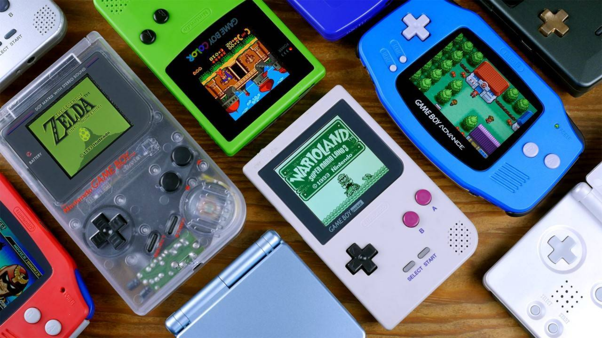

The History of Nintendo
Today we are exploring the captivating history of Nintendo, a journey that spans over a century and has shaped the world of gaming as we know it today. From its humble beginnings as a playing card company in late 19th-century Japan, Nintendo has evolved into an iconic and innovative force in the video game industry. This site is your portal to discover how Nintendo's early ventures into electronic entertainment paved the way for the creation of beloved franchises and groundbreaking consoles.
